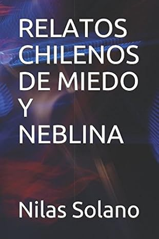

RELATOS CHILENOS DE MIEDO Y NEBLINA
Este libro pretende recoger un género prácticamente ausente en la literatura chilena: el cuento de terror. Si bien, a veces podemos encontrar algunos relatos que se refieren al tema, siempre discurren sobre leyendas o mitos del pasado, que pueden parangonarse más bien al género de literatura folklórica que al cuento de terror propiamente tal. Por esta razón, he vertido en el papel narraciones y experiencias de aquellas que se cuentan en las tertulias, en los paseos campestres, en charlas con personajes típicos de las diferentes zonas de Chile, cuando la política, la música y el deporte se han agotado como tema de conversación, y surgen estas historias que erizan el cabello, porque no son una fantasía: es una descripción de fenómenos extraños y pavorosos que rodean misteriosamente nuestra realidad cotidiana y algo ramplona y que en algún momento de nuestra vida, puede llegar a alcanzarnos. Estos seis cuentos presentan un denominador común: la presencia de la neblina, llamada "camanchaca" en el norte chileno, y a ella, se debe el título de esta obra. "La Cabra en el Tejado", nos evoca los misterios de los valles precordilleranos, con sus paisajes enigmáticos y sus historias de brujos y apariciones. El relato es la transcripción de las vivencias del sujeto que las experimentó. "El Encuentro", nos transporta al miedo individual surgido de la inquietud que provoca la confluencia con personajes extraños y siniestros. La probabilidad cotidiana de tales eventos refuerza la sensación de que a cualquiera puede ocurrirle. "Los Niñitos Mojados", nos destruye la seguridad que supuestamente nos brinda la cabina de un vehículo en relación al caminante solitario que se interna por ambientes lóbregos e intimidantes, provocándonos la angustiosa certidumbre de que no hay protección material que valga para precaverse de experimentar un suceso extraño y pavoroso. "El Vivac", recoge un típico suceso de los cientos que les ocurren a los transportistas y a los mineros que dicen relación con las tragedias asociadas a las riquezas, factores siempre conjugados para generar anécdotas sobre eventos inexplicables. "El Patio Número Dos", es la revelación palpable del porque rehuimos a los cementerios en el silencio de la noche . Finalmente, "Dominó", es la historia del norte salitrero que, desde la fría camanchaca sobre un pueblo abandonado, nos entrega uno de sus fatídicos y olvidados capítulos.